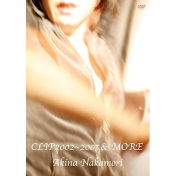

音乐视频：第5张
发行年份：2009年
发行日期：7月29日
| 歌名 | 作词 | 作曲 | 编曲 |
|---|---|---|---|
| 原始、女は太陽だった (video clip) | 及川眠子 | MASAKI | 岩崎文紀 |
| MOONLIGHT SHADOW-月に吠えろ (video clip) | 高見沢俊彦 | 小室哲哉 | 小室哲哉 |
| 『-ZEROalbum- 歌姫2』录制片段 〜瑠璃色の地球/秋桜/異邦人〜 | 松本隆・さだまさし・久保田早紀 | 平井夏美・さだまさし・久保田早紀 | 千住明 |
| -『ZEROalbum- 歌姫2』TV-SPOT | |||
| The Heat 〜musica fiesta〜 (video clip) | Adya | URU | URU |
| 「The Heat 〜musica fiesta〜」TV-SPOT | |||
| missed U (video clip) | SHE | 243 | 243・URU |
| 『Resonancia』TV-SPOT | |||
| 『Akina Nakamori〜歌姫ダブル・ディケイド』TV-SPOT | |||
| Days (video clip) | 中森明菜 | 織田哲郎 | 武部聡志 |
| 「Days」制作视频 | |||
| 「Days」TV-SPOT | |||
| 『I hope so』TV-SPOT | |||
| 『歌姫3 〜終幕』录制片段〜傘がない/スローなブギにしてくれ/ハリウッド・スキャンダル〜 | 井上陽水・松本隆・阿木燿子 | 井上陽水・南佳孝・都倉俊一 | 千住明 |
| 『歌姫3 〜終幕』官方采访 | |||
| 『歌姫3 〜終幕』TV-SPOT | |||
| 落花流水 (video clip) | 松本隆 | 林田健司 | 坂本昌之 |
| 「落花流水」TV-SPOT | |||
| 花よ踊れ (video clip) | 夏蓮 | 羽場仁志 | 上杉洋史 |
| 「花よ踊れ」TV-SPOT | |||
| チャイナタウン (video clip) | 山川啓介 | 矢沢永吉 | 千住明 |
| いい日旅立ち (video clip) | 谷村新司 | 谷村新司 | 上杉洋史 |
| 『歌姫ベスト 〜25th Anniversary Selection〜』TV-SPOT | |||
| あの夏の日 (video clip) | エリコ | 市川淳 | 市川淳 |
| 「あの夏の日」制作视频 | |||
| 『バラード・ベスト 〜25th Anniversary Selection〜』TV-SPOT | |||
| 『艶華 -Enka-』录制片段 〜無言坂〜 | 市川睦月 | 玉置浩二 | 鳥山雄司 |
| 『艶華 -Enka-』対談：千住明氏 | |||
| 『艶華 -Enka-』TV-SPOT |
首发规格：DVD: UMBK-1137
唱片公司：Universal Sigma
再发行：
2010年9月22日 - DVD: UMBK-9224
2012年9月26日 - DVD: UMBK-9224
2013年6月19日 - DVD: UMBK-9224
2017年3月8日 - DVD: UPBY-9039
2020年10月7日 - DVD: UPBY-9114